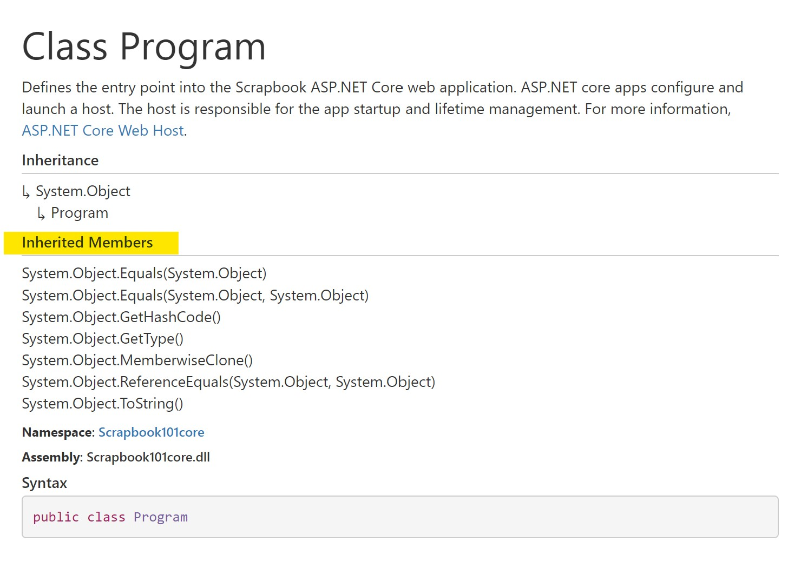

About This Site
Overview
This site was created with DocFx. How is this site different from our GitHub pages site for Scrapbook101?
This site parses comments from code (under \Scrapbook101core) and creates API documentation together with conceptual content (under \articles). The conceptual documentation from the GitHub pages site was reused here with few changes.
In the previous site, we used Jekyll to create the website, which contained only conceptual content. We used Jekyll to run local builds and then pushed the .md files to GitHub into a \docs folder, which we defined as a GitHub pages website. There, the Jekyll process would kick off automatically and create the HTML for the site.
This site relies only on DocFx. We still work offline (currently), run DocFx to produce the website with both conceptual and API documentation, and then push to Github \docs folder. The difference with our Jekyll site is that here we are pushing the HTML files and are not relying on Jekyll to build HTML for us.
Initial steps
We started by running docfx init to create a simple documentation website. We played around with that for a bit, following the walkthroughs.
After that initial simple documentation website, we started reading up on using C# XML documentation.
Then, we merged the simple documentation website structure with Scrapbook101core. Specifically, we created a \docs and \docbuild folder parallel to code folder. In the \docbuild folder, we run docfx to gather metadata and build HTML. Then as a final step, we copy the \doc\build\ _site content over to \docs.
Our local process:
- Start in root folder.
- In this case, it is the directory we cloned from GitHub, "scrapbook101core".
- Change directory to \docbuild.
- There should be a docfx.json file in the root of this folder. We copied the filed from the walkthrough.
- If you didn't start with a docfx walkthrough, you can use the
docfx initsubcommand to generate an initial docfx.json file.
- Run
docfx metadata.- This generates YAML files from source code.
- Run
docfx build.- This generates client-only website combining API in YAML files and conceptual files.
- Run
docfx --serve- This command executes the subcommands
metadataandbuildand then creates a local web server to host the pages. So the previous two steps can be skipped. They were shown just to talk about what's happening behind the scenes. - To use a different port try
docfx --serve --port=8090. - Hosting the pages is not strictly necessary. If you ran
docfx metadataanddocfx build, then at this point you can navigate to the _site folder and just open the index.html file without creating a local web server to host.
- This command executes the subcommands
- Copy all content from \docbuild\ _site to \docs.
- The copy operation is because DocFx is not integrated with GitHub Pages (issue).
- The downside of this is that we end up pushing a lot of files (HTML and supporting files).
- Commit, push changes to GitHub.
- Don't forget to check you .gitignore file and make sure _site is excluded because we'll be publishing the docs in the \docs folder.
The directory structure at the root of Scrapbook101Core looks like this:
├───docbuild
│ ├───api
│ ├───articles
│ ├───images
│ ├───obj
│ └───_site
│ ├───api
│ ├───articles
│ ├───fonts
│ └───styles
├───docs
│ ├───api
│ ├───articles
│ ├───fonts
│ ├───images
│ └───styles
└───Scrapbook101core
├───Assets
├───bin
├───Controllers
├───Models
├───obj
├───Properties
├───Views
└───wwwroot
Gotchas
Some things we ran into:
When testing the walkthroughs, we used the suggested folder naming \docfx_walkthrough\docfx_project. Then, in the context of the walkthrough, we pointed to Scrapbook101core code just to see what would happen and it built fine. However, when we then created the \docbuild folder inside of Scrapbook101core and tried to run
docfx metadata, it was still looking for the \docfx_project. The culprit: \Scrapbook101core\obj\xdoc\cache. We deleted the cache folder and it started working.In the process of ensuring we can always build everything from scratch, we often wipe out the .yml files in the \api folder. But be careful not to wipe out the index.md file if that is what you are pointing to in root toc.yml.
Pay attention to warnings in docfx output, they are useful.
Using the Jekyll process, we could define global site variables like {{site.sn}}, where site.sn = "Scrapbook101". With the docfx process, we haven't figured out how to do that.
Next steps
Learn about templates
Starting with the advanced walkthrough as guidance, we did the following as a test:
See what templates are available with
docfx template list. We are interested in the default template.Export the default template with
docfx export default.- This will created a folder called _exported_templates. Either add this to .gitignore or delete after done.
In our \docbuild folder create a templates\cust-template folder.
Decide to change the footer template of the site to add the name of our site. So in _exported_templates\default\partials copy the footer.tmpl.partial file to docbuild\templates\cust-template\partials.
Edit the footer.tmpl.partial file to add "Scrapbook101core".
- The .templ is a Mustache template file used by renderers.
- In this simple case, it's obvious where to add the extra text "Scrapbook101core"
In the build key of docfx.json reference the custom template.
"template": [ "default", "templates/cust-template" ],Build site and verify changes.
Fine tune reference with template
The goal is to removed the inherited members section as shown below:

Find the correct template _exported_templates\default\partials\class.header.tmpl.partial and copy to corresponding folder in \cust-templates.
Edit out the inherited members part:
{{#inheritedMembers.0}} <div class="inheritedMembers"> <h5>{{__global.inheritedMembers}}</h5> {{/inheritedMembers.0}} {{#inheritedMembers}} <div> {{#definition}} <xref uid="{{definition}}" text="{{nameWithType.0.value}}" alt="{{fullName.0.value}}"/> {{/definition}} {{^definition}} <xref uid="{{uid}}" text="{{nameWithType.0.value}}" alt="{{fullName.0.value}}"/> {{/definition}} </div> {{/inheritedMembers}} {{#inheritedMembers.0}} </div> {{/inheritedMembers.0}}Build and verify.
Learn about links and cross references via UID.
For example, here is a link to Scrapbook101core - Code Discussion file using its UID. Here is a link to a class in the API documentation using its UID: Item. Or we can change the text for the API link as so The Item Class. Here's the help page on linking.
Here are those links in markdown:
<xref:code-discussion>
<xref:Scrapbook101core.Models.Item>
[The Item Class](xref:Scrapbook101core.Models.Item)
How to link to a code file? For example, appsettings.json.
Future
Create a Azure pipeline process to build docs automatically. The flow would be then:
- Author comments in code.
- Check in code changes.
- Kick off or set up pipeline to automatically build upon changes to code. TBD.